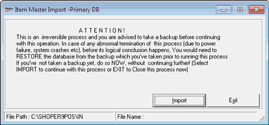

To maintain uniformity of item details across the chain and to avoid duplication, the head office sends details of new items added, to all the POS location. The items master can also be sent by other chain constituent. The POS locations can use this option to import Item Masters from HO.
The process explained is for manual loading of Item Master. Auto loading is performed through a synch process defined at HO for the POS as per a schedule.
How to reach: Housekeeping > Data Import > Item Master
The Item Master Import -Primary DB window is displayed.

The price master file imported into POS Primary DB is of the format SHFM02_xxx_scc_nnnnnn.txt and should be present in the Shoper-In folder.
The details of the file components are:
SHFM02: Enables you to identify the file type as Primary,
xxx: Shoper company code of the source of price master, i.e., file source/ Head Office,
scc: Your Shoper Company code/ destination, i.e., POS/ Distributor,
nnnnnn: Sequence number,
.txt: File extension
File Name Validation
The Item Master is validated before import into its Primary DB. The System
checks for the correctness of the POS Company code in the file name as well as its contents before import.
checks for the sequence number of the file being imported. The system will not import files of lower sequence numbers. In other words the sequence numbers of the files being imported should be increasing progressively.
If there is any change in the item master’s file name and its contents, the system will abort the import of item masters.
The Item Master file is deleted after import into POS Primary DB. If an error is detected during import, the file is renamed as Error <file name> and the error file details are recorded in a Log file.
Note: The file SHFM02scc.TXT (Where scc = Shoper Company Code) sent by Shoper POS of versions earlier to release 3.0 can also be used for import. This file is to be present in the Shoper-In Folder.
POS Activity Log
This is a table providing details about the status of Item Masters import into POS Primary DB. The contents of this table are transferred to HO to report whether the import was successful or not.